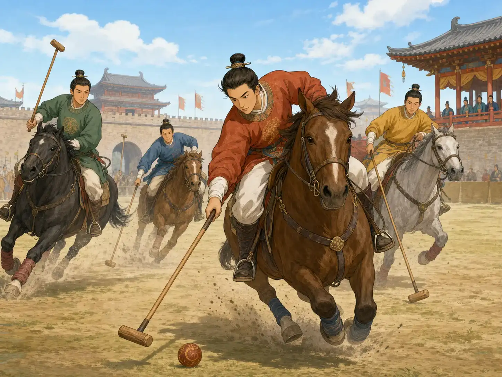
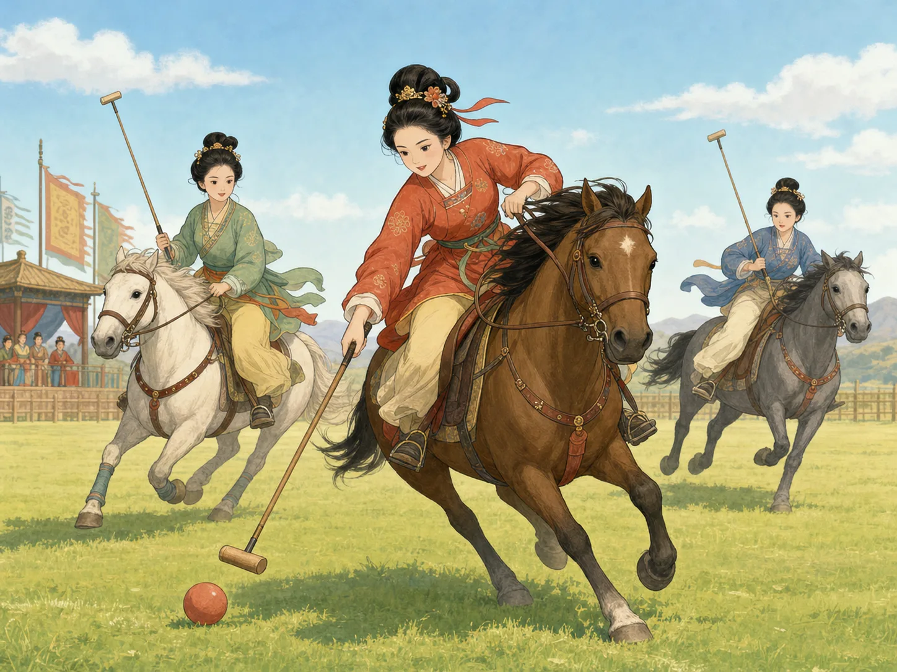

马球：唐朝人最爱的马上比赛
Polo: A Favorite Horseback Game in the Tang Dynasty
Page 1
把打球搬到马背上，速度一下子就上来了
Put Ball Play on Horseback, and Everything Speeds Up

Polo asks riders to guide a horse, chase a ball, and swing a mallet all at once.
你可以把马球想成一种骑在马上打的球赛。骑手一边让马往前冲，一边低下身子去追地上的球，再用长长的球杖把球打出去。
光是站在旁边看，就会觉得很快。马在跑，球在滚，骑手还得随时转向。比起在地上打球，放到马背上以后，难度一下子就高了很多。
在A powerful and creative time in China about 1,300 years ago.，马球特别受欢迎。很多人一看到这种比赛，就会觉得它又热闹、又勇敢、又有一点吓人。
You can think of polo as a ball game played on horseback. A rider sends the horse forward, bends down to follow the ball on the ground, and then swings a long mallet to knock it away.
Even from the side, the game looks fast. The horses are running. The ball is rolling. The riders have to turn quickly and stay balanced at the same time. Once ball play moves onto a horse, it becomes much harder.
In the A powerful and creative time in China about 1,300 years ago., polo became especially popular. To many people, it looked lively, brave, and just a little frightening.
Page 2
唐朝的女人，也会骑马上场
Women in the Tang Dynasty Played Too

Objects from the Tang dynasty still show women riding and playing polo.
很多人一想到古代比赛，会先以为只有男人上场。可马球不是这样。唐朝留下来的俑像和图画里，也能看到女子骑马挥杖。
这件事很能说明唐朝的气氛。那时不少女性会骑马，也敢参加这种快节奏的活动。她们不是坐在旁边看看，而是真的上马、追球、比赛。
所以马球有意思的地方，不只是快，还在于它让我们看见：一千多年前的唐朝，比赛场上已经比很多人想的更热闹了。
When people picture ancient sports, they often imagine only men on the field. But polo was different. Tang dynasty figures and paintings also show women riding horses and swinging mallets.
That tells us something important about the Tang world. At that time, many women rode horses and were willing to join fast-moving activities like this. They were not only sitting nearby and watching. They were really riding, chasing, and playing.
That is one reason polo is so interesting. The game was not only fast. It also shows us that more than a thousand years ago, Tang sports life was livelier than many people expect.
Page 3
皇帝喜欢看，也喜欢亲自上场
Emperors Loved Watching and Playing
唐朝有些皇帝很喜欢马球，不但爱看，还会亲自上场打。有的皇宫里，甚至修了专门打马球的场地。
这也说明马球不是一种慢慢悠悠的游戏。它很刺激，可也有风险。马跑得太快，骑手一分心，就可能摔下来。所以大家一边觉得它精彩，一边也知道它不是闹着玩的。
Some Tang emperors loved polo so much that they did not only watch. They played themselves. In some palaces, special grounds were even built for polo matches.
That also tells us polo was not a gentle, slow game. It was exciting, but it also carried risk. When horses move that fast, one moment of lost balance can lead to a hard fall. People admired the sport, but they also knew it was serious.
Page 4
这项运动后来一路传到了很多地方
Later, the Game Traveled Far
马球不是只在中国玩过。很早以前，亚洲别的地方也有人玩这种运动。人来人往、商路相通，球赛也跟着一路传来传去。
后来，它传到了印度，又被英国人学去，再传到更多地方。今天很多人听到 polo 这个词，想到的已经是世界上的一项运动了。
Polo was not played only in China. Long ago, people in other parts of Asia played it too. As travelers, traders, and riders moved from place to place, the game moved with them.
Later, it spread to India, then was learned by the British, and after that traveled farther still. Today, when many people hear the word polo, they think of a sport known in many parts of the world.
小结
In Summary
马球把骑马和打球放在了一起，所以看上去特别快。唐朝人很喜欢它，女人也会参加，连皇帝都常常看得着迷。
它后来从一个地方传到另一个地方，变成了今天很多人都认识的 polo。一颗球、一匹马、一根球杖，就能带出一整场飞快的热闹。
Polo brought horseback riding and ball play together, so it looked wonderfully fast. People in the Tang dynasty loved it, women took part in it, and even emperors could not look away.
Later, it traveled from place to place and became the polo many people know today. One ball, one horse, and one mallet were enough to create a whole rushing scene.